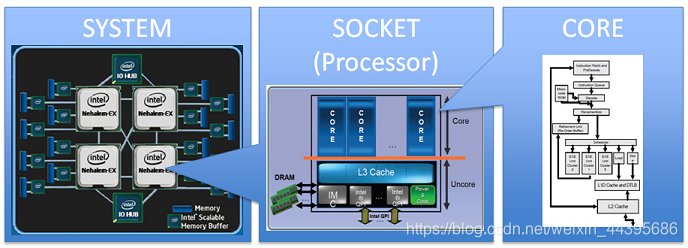
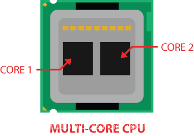
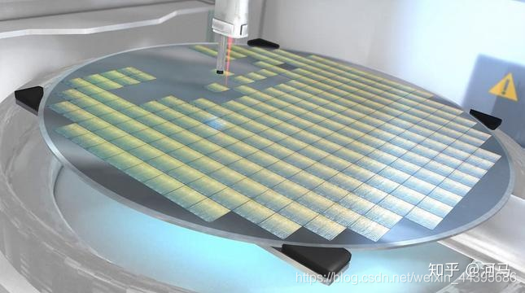
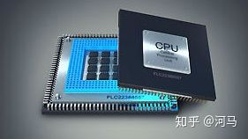
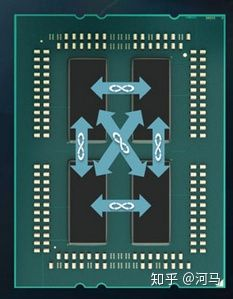
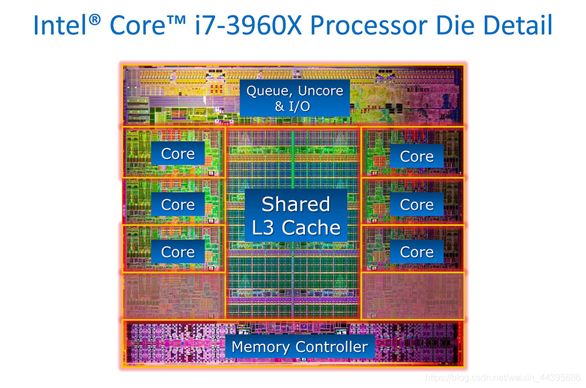
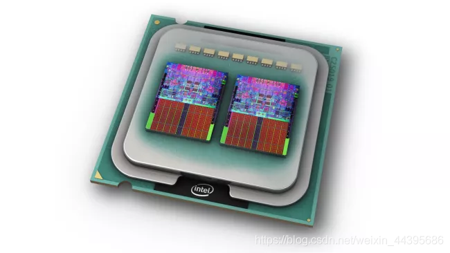
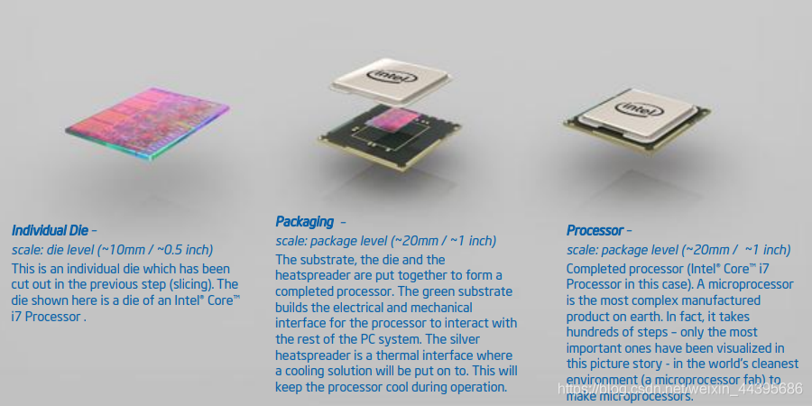

Socket/Node/Die/Core/Processor/ 针对CPU封装的精细区分
CPU封装多种术语解释
socket：在服务器上，一块主板可以拥有多个socket，即CPU的物理插槽。一般插槽上CPU的封装方式会分为BGA和LGA两种方式。BGA为CPU集成在主板上，不可拆卸式的。而LGA是可拆卸方式。
node：node是逻辑概念，对应于socket。NUMA结构中core或cpu分组，每个node内部有自己的CPU总线和内存。Node是可跨socket的。（node是针对NUMA的硬件体系结构而言的）
die：die是晶片颗粒，一颗裸晶片。如部分CPU中会有两个die，分为die0和die1。
core：core是物理概念，一个独立的硬件执行单元，对应于物理CPU（但是是多个core集成在一个真正的物理CPU中），也是处理器芯片上的独立计算核心。
cpu/processor：这两个术语指packge、core、逻辑内核(logical processor)等多种意思。当我们讨论计算机硬件时，CPU和Porocessor一般指physical processor即一个packge。在操作系统或应用程序中，CPU和porocessor通常指logical processor。
thread：逻辑概念，现在处理器超线程技术允许一个core处理多个theard。一个core虚拟为多个逻辑内核，每个逻辑内核执行一个theard。
###CPU and Core
CPU ≠ core。CPU是指整个的中央处理单元，指令在这里处理，信号从这里发出。
CPU包含的范围比较大，里面包含了core，内存控制器，PCIe控制器，片外总线这些东西，真正干活的是core，用来执行一条控制流（线程）。一个CPU中可能有多个core，平常我们说的物理核心都是指core，每个物理核心（core）都有自己的电路，看下面这幅图。

如上图，多个CPU和多核是不等价的两个概念
core (Physical)
物理核心（core）是一个独立的执行单元，它可以与其他核心（core）并行运行一个程序线程。现代CPU具有多个core，这些core几乎都是独立的处理单元。供应商可以将core作为独立的裸片(die)制造在同一封装（package）上，也可以在同一裸片(core)上蚀刻。
下图中两个黑色方块代表core，灰色的是die。

每个物理核心可以有2个逻辑核心。然而，逻辑核心与在同一物理核心上运行的其他逻辑核心共享资源，因此，拥有更多的逻辑核心并不一定会获得与拥有更多物理核心相同的性能提升。
在intel超线程(HT)的情况下，每个物理内核有两个逻辑内核，所以一个四核(物理)i7处理器将有八个逻辑内核。然而，一个物理核心中的两个逻辑核心不能真正地相互并行操作。这是因为HT的工作原理是，当一个逻辑核心在等待，而另一个逻辑核心却无事可做(例如，当它在等待缓存或内存取出时)时，让一个逻辑核心进行操作。
die
知乎有两篇文章对die介绍的很清楚，看完就懂
Die是处理器在生产过程中引入的概念。总的来说，Die或者CPU Die指的是处理器在生产过程中，从晶圆（Silicon Wafer）上切割下来的一个个小方块（这也是为啥消费者看到的CPU芯片为什么都是方的的原因），在切割下来之前，每个小方块（Die）都需要经过各种加工，将电路逻辑刻到该Die上面。

die是一块半导体材料(通常是硅)。一个die可以包含任意数量的core。最多有15种可用于英特尔产品线。die是构成CPU的晶体管的实际所在。
对于主流的CPU厂商Intel和AMD而言，他们会将1个或者多个CPU Die封装起来形成一个CPU Package，有时候也叫作CPU Socket（CPU插槽），如下图所示：

而对于AMD的EYPC CPU而言，它的每个CPU Socket由4个CPU Die组成，每个CPU Die中包含有4个CPU内核，如下图所示，黑色的长方形就是die，每一个中有4个core（物理核心），不过看不见。

CPU Die之间通过片外总线（Infinity Fabric）互联，并且不同CPU Die上的CPU内核不能共享CPU缓存，而单个Die的Xeon处理器内和所有CPU内核其实是可以共享CPU的第三级缓存(L3 Cache)的。
总结：die就是一个硅片，在它上面可以安装core，一个core或者多个core都可以。core是一个完整且独立的执行单元。HT技术可以让一个core并发的执行两个控制流（线程），通常就说这个物理core可以模拟出两个逻辑核，4核8线程就是说有四个核心（core），这4个是物理存在的执行单元，8线程指模拟出来的8个逻辑核，实际并不存在8个，只是在逻辑层面来可以说有8个。

package
package是当你购买单个处理器时所得到的。这里的CPU“package”是指包含一个或多个die的塑料/陶瓷外壳和镀金的触点，以配合你的主板。主板上的每个CPU插槽（socket），只能接受一个package。package是插在插座上的单元。如下图，左侧全是金属触点的是CPU package的背面，右侧有一个明亮外壳的是CPU package的正面。
你至少会有一个核心（Core）、一个die和一个Package。为了使CPU可以正常工作，它必须有一个可以执行命令的单元，一块物理上包含实现处理器晶体管的硅，以及将硅连接到主板和IO上的接口的封装。
Dual-core
双核处理器是一个包含两个物理核心（core）的package。可以是一个die，也可以是两个die。第一代多核处理器通常在一个package上使用多个die，而现代设计将它们放在同一个die上，这带来了一些优势，比如能够共享on-die缓存。下图是一个双核心（core）的CPU，使用了两片die，每片上有一个物理核心（core）。

“CPU”并不是很明确的一个词。当人们购买“CPU”时，他们购买的是CPU package。当他们检查“CPU扩展”时，他们讨论的是逻辑核心。这样做的原因是，在大多数实际应用中，双核处理器（Dual-core ）的行为类似于两个处理器系统（两个CPU），即有两个CPU插槽或两个CPU单核package的系统，因此在讨论可伸缩性时，最合理的做法是统计可用的核心（core）;它们是如何安装到die、package和主板上的就不那么重要了。
die，package和CPU的关系
来自Intel 工艺流程图
